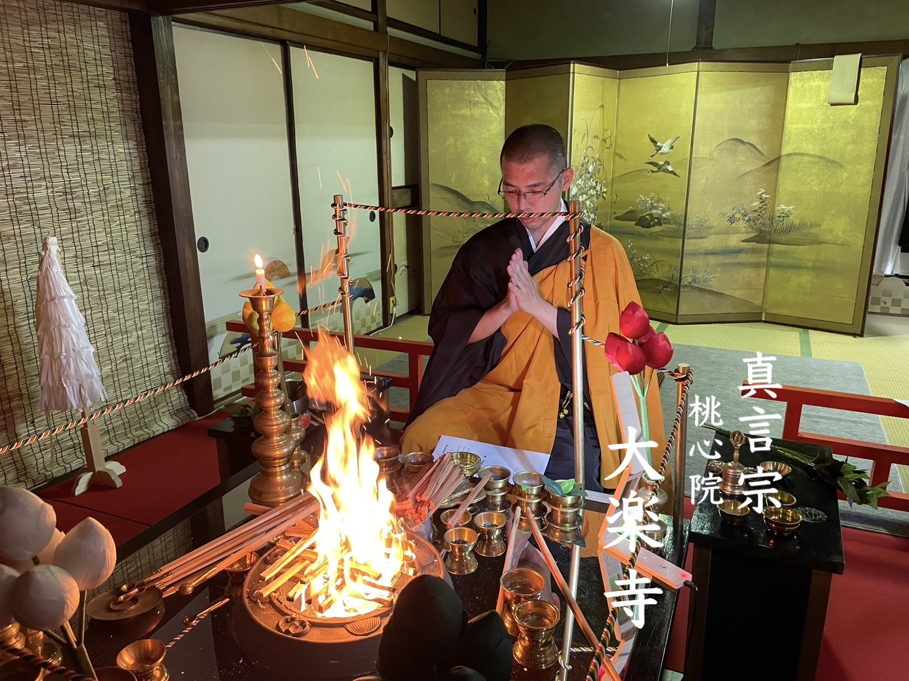

History
八幡神社の縁起
昭和27年9月22日、本神社は譽田別尊を奉斉し公衆礼拝の施設を備え神社神道に従って祭礼を行い祭神の神徳をひろめ本神社を崇敬するもの及び神社神道を言奉する者を教化育成し並びに社会の福祉に寄与するため本神社の財産管理その他維持管理に必要な業務を行なう、目的として成立しました。
令和5年12月17日、本神社は真言宗善通寺派阿闍梨を役員として迎え、古来より伝わる神社神道の祭礼を敬い、その伝統を厳護しつつ、真言密教の法儀に則り、神前護摩、諸供養を修し、祈願成就・国家安穏・万民豊楽を祈念する道場として、新たなる歩みを始めました。
ここに譽田別尊を八幡大菩薩として篤く奉斎し、本地垂迹の大義を顕し、神仏一如・和光同塵の教えを仰ぎ、神恩仏徳をともに敬い、諸天善神・護法善神の加護を願い奉ります。
Greeting
心を観察し
心を整理する
正覚者「仏」の教え、隙なく精密に、その教えを学「真似」んで実践することが仏教と密教です。 眼に花は観れません、これが観瞑想「ヴィパッサナー瞑想」です。

Youtube 法句経 法話
動画で学ぶ仏教
法句経を中心に、仏教の智慧や日々の生き方について わかりやすくお話ししています。
偈1 チャックパーラ長老の物語
偈2 マッタクンダリーの物語
Services
ご案内
ご祈祷
家内安全、商売繁盛、厄除け、身体健全など、願意に応じてご祈祷いたします。
護摩供養
護摩の炎に願いを託し、心身を清め、日々の歩みを支える祈りを捧げます。
供養・法要
先祖供養、水子供養、各種法要について、丁寧にご相談を承ります。